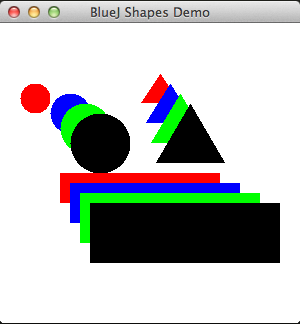

Java Interface Type
8: Java interface type


In this presentation we show how to use the Java interface type to unify common behaviour. In doing so we are demonstrating a concept known as polymorphism, a pattern in object oriented programming in which classes have different functionality while sharing a common interface.
We have already gained experience in using sorting algorithms but found it necessary to rewrite the algorithm when we wished to sort a new type. We show how, by using interfaces, we may write such an algoritm only once yet use it to sort a variety of types of our choosing.
Using_Interfaces

A Java 7 Interface is a type comprising a group of public method headers (return type and signature). It may also include constant declarations that are static public by default. Methods have no implementation in the interface definition, implementation taking place in classes that use (implement) the interfaces. An interface only specifies behaviour: one is not allowed to create objects of an interface. However an interface type variable may refer to an object of a class that implements that interface. Java 8 interfaces have additional features that are not addressed here.